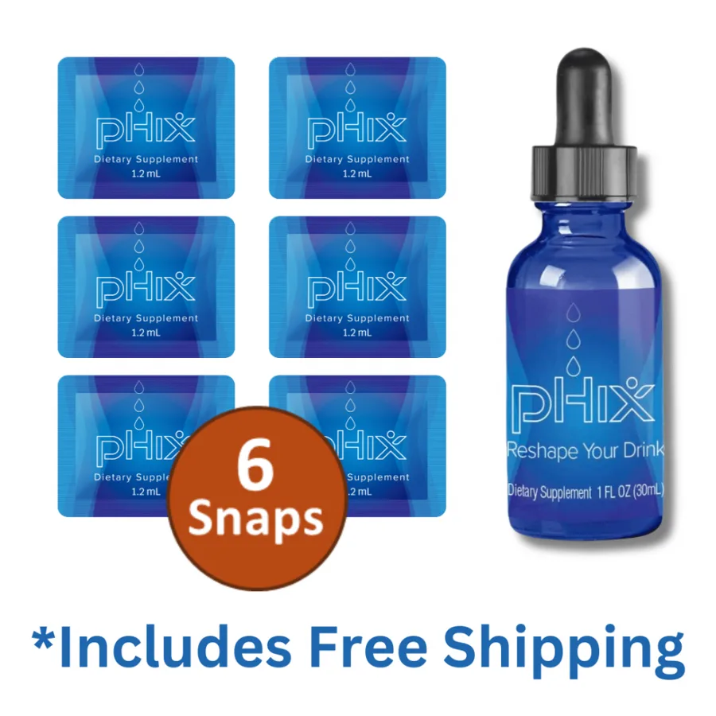
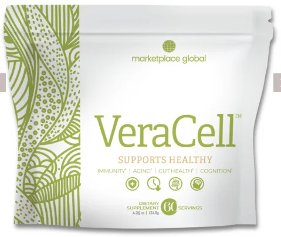
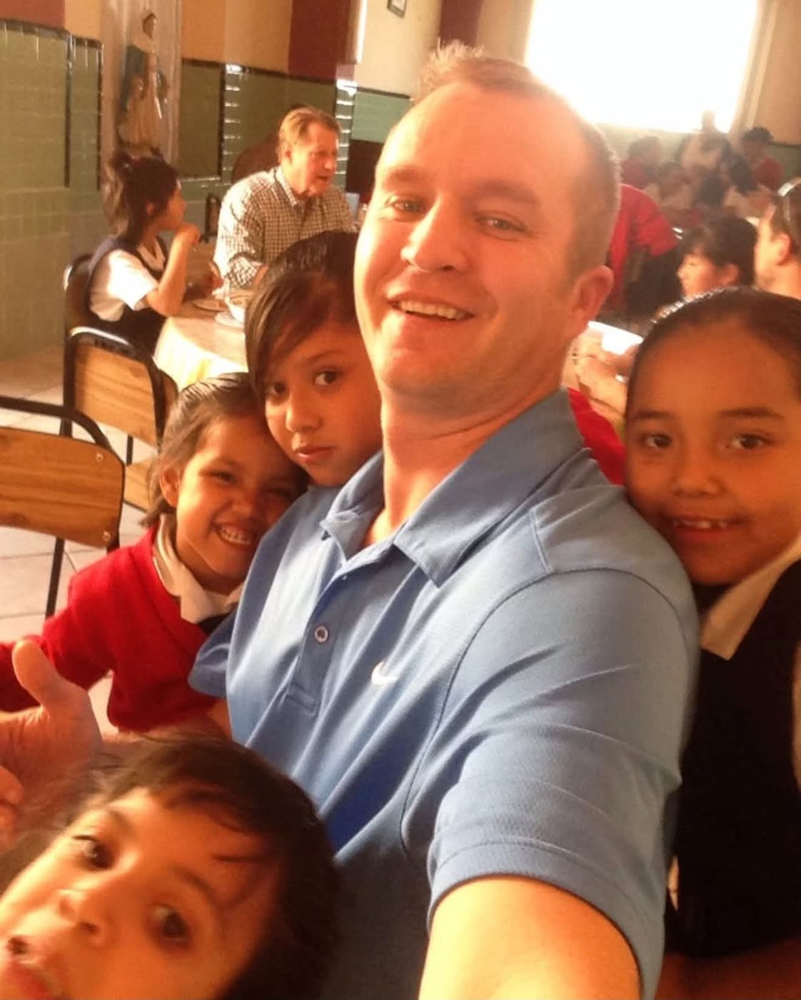
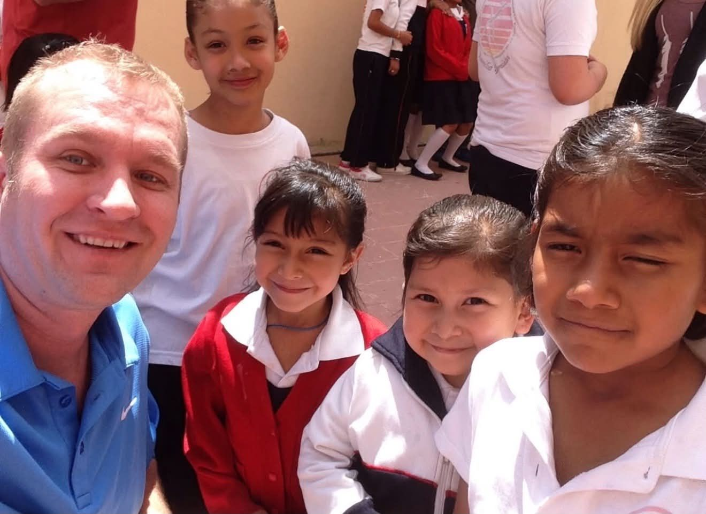
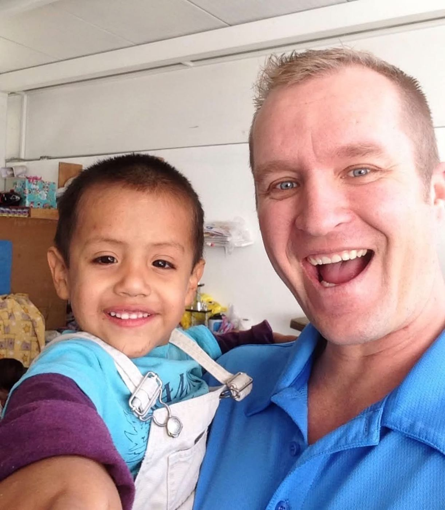
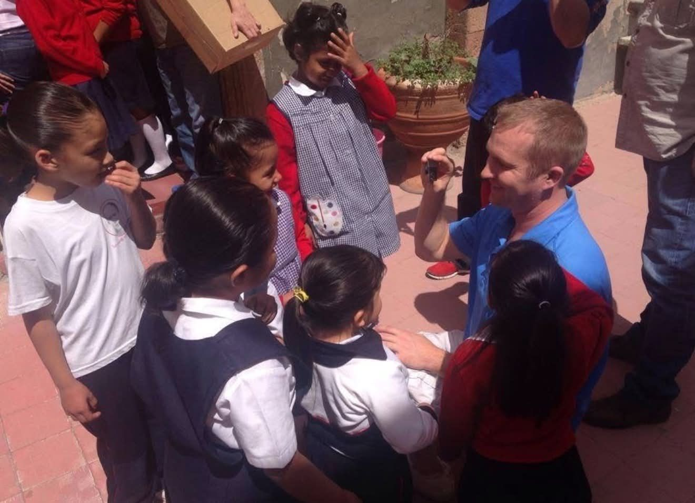
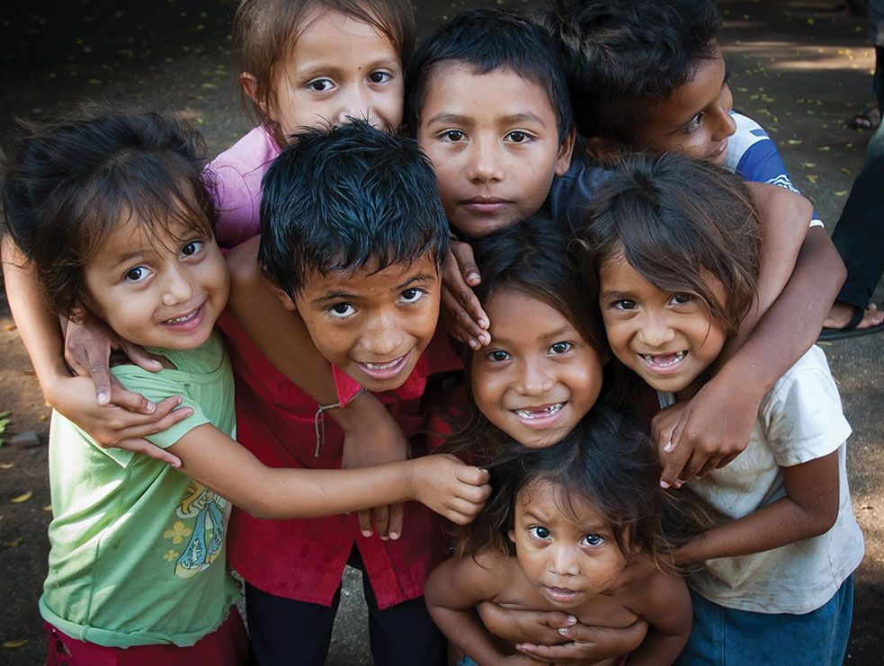
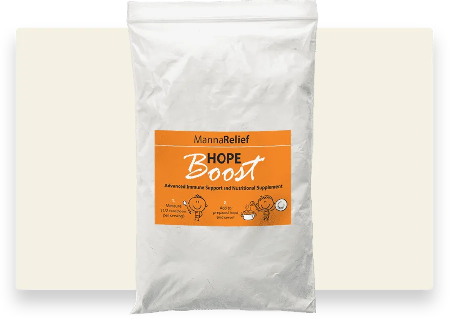

No. 01Hops flower · Bottle + 6 Snaps

pHix
Concentrated from the hops flower. Explore the product, its ingredients and the details behind it.
Science & infoA movement built one person at a time
Two plants. Endless possibilities.
Every product sold helps feed a child in need.
– Michael Beal
Aloe and the hops flower, captured in pHix and VeraCell. Take your time. Ask questions.
Every product sold helps feed a child in need.

Concentrated from the hops flower. Explore the product, its ingredients and the details behind it.
Science & info
An aloe-based prebiotic powder supporting gut health and healthy immune function.
Explore productThe conversation
Three short excerpts from the full interview. Tap a title to play.




A healthier life should be more than a possibility for the people who can afford it.
We're One More, a community inspired by the science and research behind aloe vera and the hops flower, and united by a mission to help malnourished children around the world.
The products start a conversation. Giving back gives that conversation a purpose. We're here to build something that matters beyond ourselves: one more person, one more connection, one more chance to make a difference.
Every product sold helps feed a child in need.

The story behind MannaRelief
Romania, 1999.
MannaRelief's story began in 1999, when Sam and Linda Caster brought an aloe-derived nutritional extract to an orphanage organization in Romania. Their work grew around a purpose: bringing nutritional support to vulnerable children.
For One More, that belief is an inspiration: that what we build together can mean more than what we achieve alone. Our shared why is simple: one more child fed, one more family impacted, one more reason to keep giving.

Our purpose, in his words
Sam Caster
Founder of MannaRelief
Two plants. A bigger purpose. Hear Sam connect the science behind VeraCell with the mission to nourish children around the world, and explain what sets it apart from acemannan alone.
The full story · Company convention
Until everyone has enough, there's always One More.
Because changing the world has always started with one.
Our purpose and aspirations, not measured product or program outcomes.
The idea is simple enough to repeat: experience the products, share what you learn, help one more person, then show them how to do the same.
No hype. No pressure. Understand the products, the work, the costs and the responsibilities before deciding what fits.
DOT is being planned to give every builder clearer next steps, personalized support and a more repeatable path, while keeping real human leadership at the center.
I
Before you join
Product customer, new builder or experienced leader: relevant information for your interests.
II
As you get started
Personalized onboarding, product education and first actions built around your goals and available time.
III
As you grow
Planned follow-up guidance, rank and team insights, and accountability connected to why you started.
DOT is planned, not available through this page today. Features and release timing remain unconfirmed.
Your next step
They sent you this link for a reason. Reply to the message, text them, or give them a call. Ask about the products, the mission, or what building with One More could look like for you.